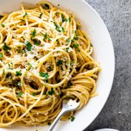

Spaghetti aglio e olio

Aglio e olio, pasta with garlic and olive oil, is one of the simplest yet greatest pasta dishes of all time. It’s quick, easy, and uses a lot of basic pantry ingredients which makes this a convenient weeknight meal.
Ingredients
- 1 pound (500g) spaghetti (or similarly shaped pasta)
- ½ cup (110g) extra virgin olive oil
- 5-6 cloves of garlic
- ¼ tsp red pepper flakes
- A bunch of fresh parsley
Directions
-
Heat a large skillet on medium-high heat, start cooking the pasta.
-
Finely slice or mince the garlic and finely chop the parsley.
-
Add the oil and garlic to the skillet and gently cook it until its lightly golden brown.
-
Add the red pepper flakes to the skillet and turn down the heat to let its flavor infuse the oil.
-
When the pasta has finished cooking, drain it, and reserve at least around a cup of the cooking water.
-
Now add the drained pasta with some of the cooking water to the skillet and toss vigorously. The starch in the pasta water will help the sauce emulsify and get it to the right consistency.
-
At the very last second add the parsley, to preserve its freshness. Adjust the seasoning to taste if necessary.
Back to index